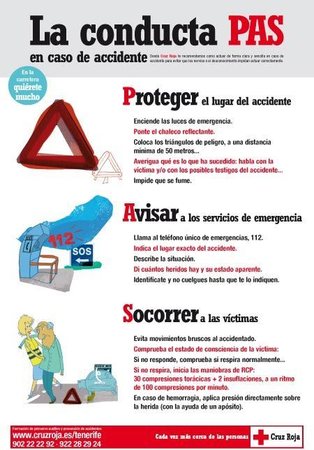

¿Qué es el Protocolo PAS?
El protocolo PAS es una regla básica de actuación en primeros auxilios que indica los pasos que debes seguir ante una emergencia. Las siglas significan:
🛑 P – Proteger
Lo primero es garantizar la seguridad:
Protege el lugar del accidente.
Evita que haya más víctimas (incluyéndote a ti).
Por ejemplo: señalizar un accidente de tráfico o apartar a la persona de un peligro.
📞 A – Avisar
Después, hay que pedir ayuda:
Llamar a los servicios de emergencia (en España, el 112).
Dar información clara: qué ha pasado, dónde estás, cuántas personas hay, etc.
🩺 S – Socorrer
Por último, se presta ayuda a la víctima:
Evaluar su estado (consciencia, respiración).
Aplicar primeros auxilios básicos según la situación.
No hacer nada para lo que no estés preparado.
Pincha aquí para acceder a un vídeo explicativo.
Protocolo PAS
